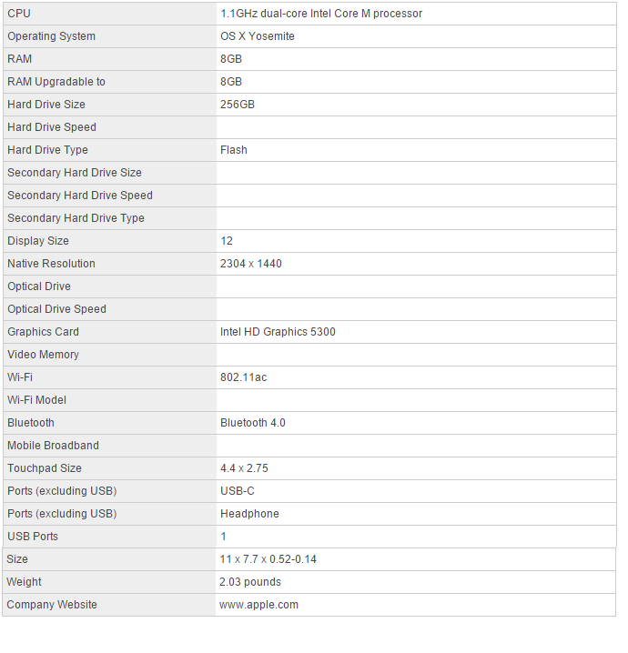
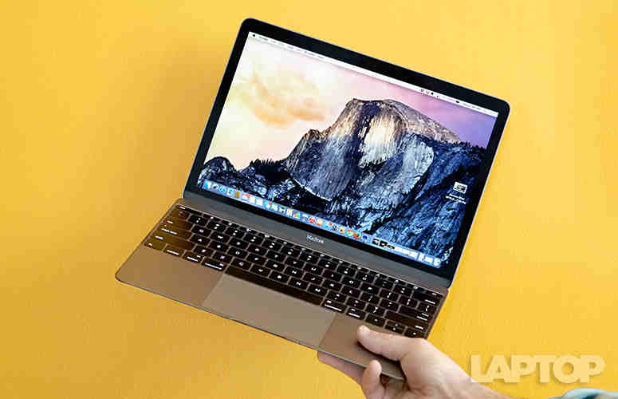
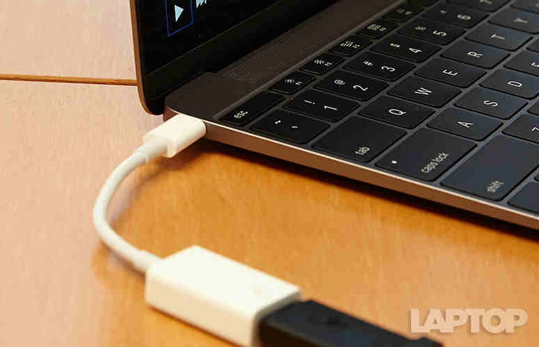
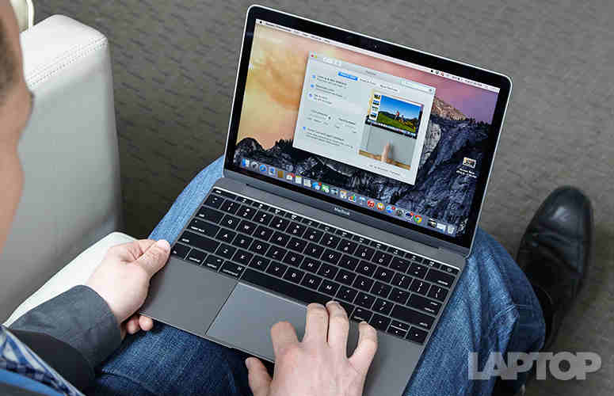
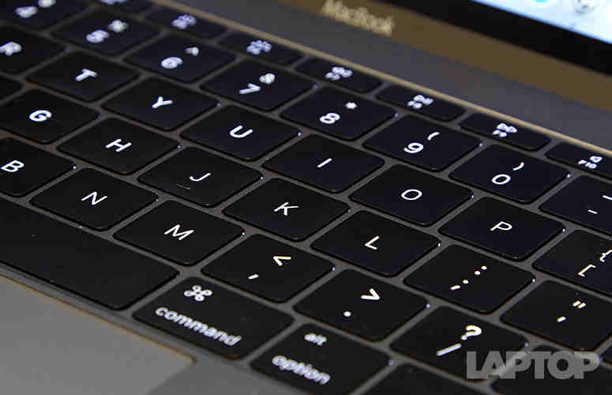
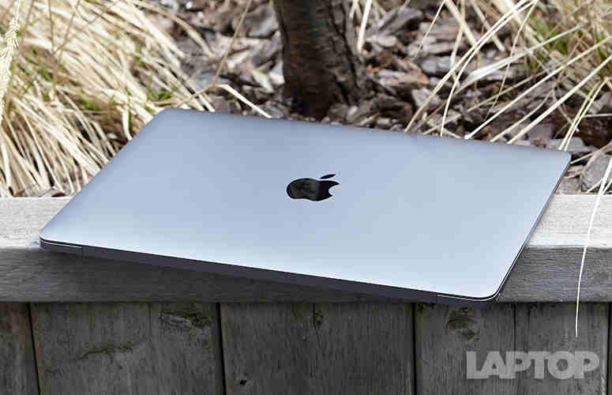

Laptop Lounge
Apple MacBook 12-inch Retina (2015) Review

Editor's Rating:
The Pros
Wonderfully light yet sturdy aluminum design; Three color options; Keyboard remarkably fast; Awesome stereo speakers; Strong battery life.
The Cons
Must use dongle to plug in most devices; Pricey
Verdict
The new MacBook is a fantastically light and compact laptop that delivers a rich display, long battery life and surprisingly strong ergonomics, but it needs more ports.
Specifications
Lighter Than Air
"Man, is this thing light," I thought to myself as I picked up the new MacBook. This is the lightest Mac ever, thanks to all the miniaturization work Apple did on the inside. For instance, the main logic board is 67 percent smaller than the 11-inch MacBook Air's. And yet the MacBook feels supersturdy, thanks to the all-anodized-aluminum body.
I'm happy to report that, after so many years of aesthetic sameness, Apple has finally added color options to the MacBook line. I took the space-gray model for a spin, which looks more sophisticated than the standard silver, but you can also pick one up in gold. (It's blingy without being too in-your-face.) All three models have elegantly rounded corners and a lid that's easy to open, albeit without a logo that lights up.
Some people may think the MacBook is just too damn small. After all, a 12-inch display isn't for everyone. Plus, this system's low profile means the screen sits fairly low when you're working with it on your lap. But I'm glad that I can smirk instead of cringe when the jerk in front of me reclines his airline seat all the way back.
The USB-C Gamble
If you're a fan of extreme minimalism, you'll love the edges of the MacBook. The right side houses two microphones and a headphone jack, and the left side is home to a single USB-C port. You won't find a standard USB 3.0 port, SD card slot or any other port. The MagSafe connection for power -- which helped prevent you from accidentally crashing your notebook on the floor when tugging on the cable -- is also gone.
For those unfamiliar with USB-C, the new standard enables charging, USB connectivity and video output through a single connection. That's pretty versatile, but you're limited in what you can do, unless you shell out for accessories.
For instance, to charge your iPhone using the MacBook or to plug in a camera, you'll need to purchase a $19 USB-C-to-USB adapter. This adapter occupies the laptop's lone port, so you won't be able to juice the laptop with that dongle plugged in. A separate $79 USB-C Digital AV Multiport Adapter lets you connect an external display, USB device and the MacBook's USB-C power cable simultaneously. When I'm already paying $1,299, I shouldn't have to spend an extra $79 to charge my laptop and plug in another gadget at the same time.
The Perfect Display
This is the screen I wish my MacBook Air had. The 12-inch Retina display on the MacBook packs 2304 x 1440 pixels into an IPS panel with ultrawide viewing angles. And it's one rich picture, as evidenced by the Furious 7 trailer I watched in Ultra HD on YouTube. I could make out every wrinkle in Vin Diesel's determined forehead during a close-up, as well as the trail of glass his car left as it exploded out of a high-rise whose facade was a rainbow of reflected colors.
The MacBook's display averaged 353 nits of brightness, which blows away the category average (261 nits) and beats the Dell XPS 13 with touch (295 nits), the Asus UX305 (281 nits) and the Air (288). That brightness also helped me easily see content on the screen in direct sunlight, even though the glossy panel has a glossy finish.
Flat But Quick Keyboard
What's most surprising about the new MacBook is that I typed even faster on its all-new keyboard than on the MacBook Air. This was possible even with its very shallow travel of just 0.5 mm, which is lower than even the Surface Pro keyboard cover's 1 mm. (The typical laptop has about 1.5 mm of travel.).
What makes the keyboard so different is a new butterfly mechanism that replaces the traditional scissor switch. Apple also enlarged the key surface area by 17 percent while providing a deeper curvature to each key.
Shockingly Good Sound
Despite its small speaker bar, the MacBook provides amazingly awesome sound. Even at maximum volume, the punchy vocals on Maroon 5's "Sugar" came through well, and the song had a robust bottom end. The opening horns on Ariana Grande's "Problem" easily filled my small office, and the singer's voice sounded silky smooth.
Bottom Line
My initial reaction to the MacBook was that it was too ahead of its time, but there are lots of things I love about it right now. The new butterfly keyboard and touchpad design make this 2-pound wonder surprisingly comfortable to use for long stretches, and the ultrabright and colorful Retina display make the experience all the more pleasant. Apple's engineers also deserve a shout-out for the loud and clear speakers that put laptops twice as big to shame.
On the other hand, $1,299 is a lot to ask for a notebook that offers comparable performance to systems that cost hundreds less (like the $699 Asus UX305), and the new MacBook lasts about 3 hours less on a charge than Apple's own 13-inch Air. Then again, I don't want to go back to my Air's bland, low-res display now.